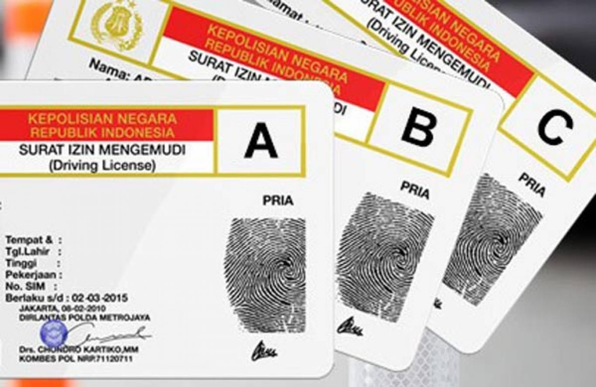

Cara Mengurus SIM Hilang/Rusak: Panduan Urus Beres!

Surat Izin Mengemudi (SIM) adalah surat wajib bagi setiap warga negara Indonesia yang ingin berkendara.
Jika SIM Anda hilang atau rusak, jangan panik. Ikuti panduan lengkap ini untuk mengurus SIM baru hingga
"beres".
Siapkan dokumen-dokumen berikut sebelum memulai proses pengurusan SIM:
Surat Keterangan Kehilangan dari Kepolisian (untuk SIM hilang).
Fotokopi SIM lama.
KTP asli.
Penting: Selalu bawa dokumen asli dan beberapa lembar fotokopi untuk berjaga-jaga.
Langkah-Langkah Mengurus SIM
Lapor Kehilangan ke Kepolisian:
Datangi kantor polisi terdekat untuk membuat Surat Keterangan Kehilangan. Jelaskan kronologi
kehilangan Anda. Surat ini wajib untuk pengurusan SIM hilang.
Datangi Polresta terdekat :
Bawa semua dokumen yang sudah disiapkan (Surat Kehilangan, fotokopi KTP, dll.) ke Polresta.
Pengisian Formulir & Verifikasi Data:
Ambil nomor antrean dan serahkan dokumen Anda. Anda akan diminta mengisi formulir permohonan SIM
baru. Petugas akan memverifikasi data Anda. Pastikan semua data sudah benar.
Pengambilan Foto, Sidik Jari, dan Tanda Tangan:
Jika SIM lama Anda sudah e-SIM, biasanya Anda tidak perlu foto ulang. Namun, jika ada perubahan
data atau SIM lama belum e-SIM, Anda akan difoto, diambil sidik jari, dan tanda tangan.
Pengambilan SIM Baru:
Setelah proses verifikasi dan perekaman data selesai, Anda akan diberitahu kapan SIM baru Anda
bisa diambil.
Estimasi Waktu & Biaya
Waktu Proses: Umumnya 1-2 hari kerja, tergantung lama waktu proses dan antrian.
Biaya:
SIM A = Rp. 80.000
SIM C = Rp. 75.000
Biaya tambahan
Surat Kesehatan = Rp. 25.000 - 50.000
Tes Psikologi = Rp. 50.000
Asuransi Jasa Raharja = Rp. 30.000
Total sekitar Rp. 130.000 - Rp. 150.000 tergantung satpas setempat
Hal Penting Perlu Tahu
Datanglah pagi hari ke Polresta untuk menghindari antrean panjang.
Pastikan dokumen yang dibutuhkan sudah lengkap.
Jika tidak ada fotokopi SIM lama pastikan mengetahui nomor SIM.
Video Tutorial
FAQ Khusus SIM
Q: Bisakah SIM hilang diuruskan oleh orang lain?
A: Umumnya tidak bisa karena memerlukan perekaman sidik jari dan foto wajah. Namun, tanyakan langsung ke
Polresta setempat untuk kondisi khusus (misal: lansia, sakit).
Q: Berapa lama masa berlaku SIM?
A: SIM berlaku 5 tahun sejak awal dibuat.
Kontak Instansi Terkait
Cek informasi kontak satpas di situs resmi Kepolisian Daerah Anda.